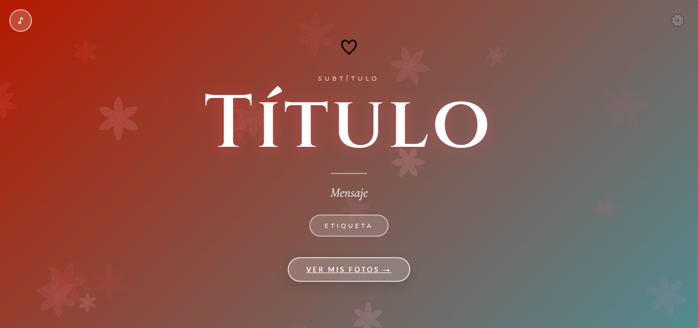

Estudiante de Desarrollo de Software en ISIL con experiencia desarrollando PWAs, aplicaciones web y proyectos Full Stack. Certificado en Python por Cisco Networking Academy y buscando mi primera oportunidad profesional como desarrollador junior.
